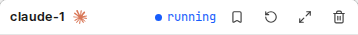
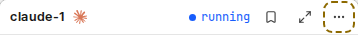
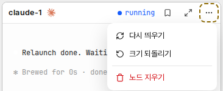

문서 ID: M40응답할 곳: 총괄 · loom 총괄연 담당: 코디 · 다시띄우기v3 · 2026-10-22
노드 다시 띄우기 · 카드 머리 메뉴
사람 요청(Q357 답 A): “A 하고 에이전트도 사용할 수 있는 도구로 만들어”. v2 의견(Q360): “헤더에 버튼이 점점 많아지는것 같고 실수하기 쉬워질 것 같음 이에대한 대책 제시하라”. 대책: 머리에는 자주 쓰고 안전한 버튼만 두고, 드물거나 위험한 일은 「⋯」 메뉴 하나에 모은다. 점선이 바뀌는 곳이다. 그림 ①~③은 시험 데몬의 실제 화면에 바꿀 부분만 넣어 찍었다.
① 머리 버튼마다 쓰임
| 버튼 | 언제 쓰나 | 실수하면 | v3 자리 |
|---|---|---|---|
| 북마크 | 자주. 노드를 사이드바에 모은다 | 다시 누르면 된다 | 머리 |
| 확대 · 줄이기 | 자주. 머리를 두 번 눌러도 된다 | 다시 누르면 된다 | 머리 |
| 크기 되돌리기 | 드물다. 크기를 바꾼 카드에만 보인다. 「정렬」 메뉴에도 같은 일(모든 크기 되돌리기)이 있다 | 바꾼 크기를 잃는다 | ⋯ 메뉴 |
| 다시 띄우기(새) | 드물다. loom 설정이 바뀐 뒤 | 쉬던 노드가 몇 초 멈춘다 | ⋯ 메뉴 |
| 노드 지우기 | 드물다. 일이 끝난 노드. 사이드바 줄에도 있다 | 되돌릴 수 없다. 지금은 확인 없이 바로 지운다 | ⋯ 메뉴 맨 아래, 빨강, 구분선 뒤 |
- 쓰임 기록은 loom에 없다. 위 빈도는 기능의 뜻으로 정했다(가설).
② 머리 지금 → 뒤 · 크기를 바꾼 표준 카드(버튼이 가장 많은 상태)
지금: 북마크 · 크기 되돌리기 · 확대 · 휴지통
뒤: 북마크 · 확대 · ⋯

심플 카드: 북마크 · ⋯
✳워커-1실행 중
오른쪽 칸 머리: 북마크 · ⋯
✳워커-1실행 중
크게 보기: 북마크 · 줄이기 · ⋯
워커-1✳실행 중
- 머리 버튼은 어느 상태에서도 셋 이하다. 앞으로 드문 일은 메뉴에 더한다. 머리 버튼은 늘리지 않는다.
- 버튼이 줄어 360px 카드에서도 긴 이름이 넘치지 않는다. 그래도 이름 칸이 먼저 줄어 「…」로 끝나게 한다(지금은 긴 이름이면 휴지통이 잘린다).
③ 열린 메뉴

- 「정렬」 옆 방향 메뉴와 같은 부품 · 같은 모양 · 같은 키보드 이동을 쓴다. 새 메뉴 체계를 만들지 않는다. 카드에는 지금 오른쪽 클릭 메뉴가 없다.
- 다시 띄우기: 실행 중인 Claude Code · Codex 노드에만 보인다. 크기 되돌리기: 크기를 바꾼 표준 카드에만 보인다. 노드 지우기: 늘 보인다.
- 지우기는 메뉴를 열고 한 번 더 눌러야 하므로 잘못 누르기 어렵다. 확인 창은 더하지 않는다(지금도 없다).
④ 다시 띄우기를 누른 뒤
- 쉬던 노드: 바로 다시 뜬다. 터미널이 새 프로세스 화면으로 바뀐다. 대화 · 받은 메시지 · 열린 질문은 그대로다.
- 턴 중인 노드: 그 턴이 끝나면 다시 뜬다. 메뉴 항목은 「턴이 끝나면 다시 띄웁니다」로 바뀌고 누를 수 없다. 실행 중인 도구 호출은 끊지 않는다.
- 실패: 그래프 아래 거절 줄(지금 쓰는 자리)에 데몬의 문장이 보인다.
워커-1: 이어 갈 Claude 세션 기록이 없다
승인할 것
| 항목 | 안 |
|---|---|
| 머리 버튼 | 권장: 북마크 · 확대(크게 보기는 줄이기) · ⋯ 만 |
| ⋯ 메뉴 | 권장: 다시 띄우기 · 크기 되돌리기 · (구분선) · 노드 지우기(빨강) |
| 지우기 확인 창 | 권장: 없음(메뉴가 한 단계를 더한다) · 다른 안: 한 번 묻기 |
| 좁은 머리 | 권장: 이름 칸이 먼저 줄어 「…」 |